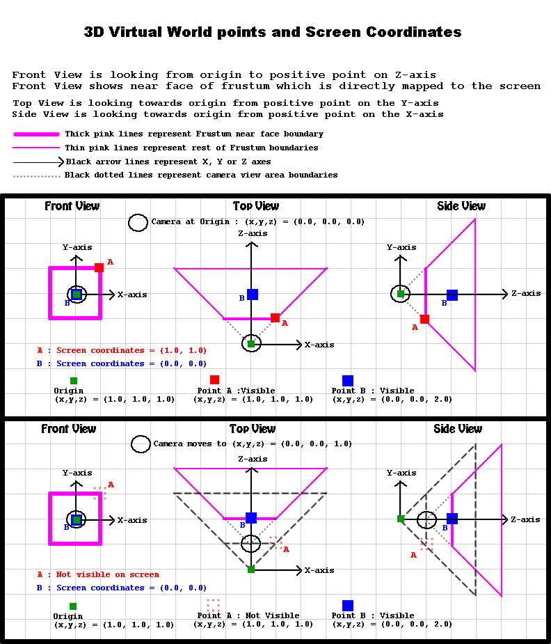
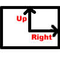
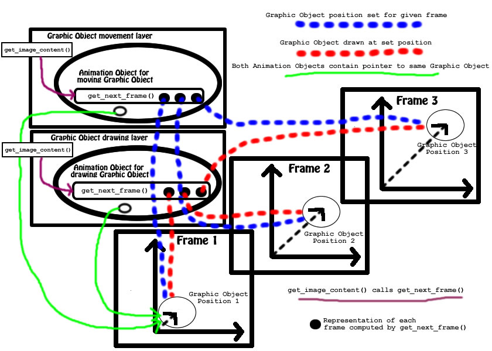

Designing An Object Oriented Animation EngineBy Yatin S. ShelkeIntroduction to Animation EnginesSo far, we've covered many of the core elements of an animation, including the Graphic Object, Animation Object, Camera, Frustum, Layers and Layer Folders. This article (and the next) will bring them all together to design an Object Oriented Animation Engine. Video games and Flash are examples of animation engines. An animation engine is the code in the animation application that drives the animation. The animation engine has many responsibilities:
A good animation engine should be able to handle all kinds of drawing and animation implementations without knowing how they are implemented. A good animation engine will not know whether the rendering is done with OpenGL or Direct3D. It will not know which platform-specific functions are used for keeping time; it shouldn't even know how memory is allocated. It must deal only with abstractions that are not platform or library dependent. It can then cater to a wide variety of animation applications on a variety of platforms. Animation engine design therefore is one of the ultimate challenges for an Object Oriented designer/programmer. Animation Object examplesLet us build some animation objects based on the discussions thus far. The objects discussed in this article are:
Camera based on OpenGL APIBefore discussing the class AnimCamera, let's see how the camera works in a graphics API such as OpenGL (this discussion is based on the C API for OpenGL). Imagine a scene that contains several objects. Each object is drawn at a specific location in the virtual world. Let's call the virtual world coordinates "world coordinates" and use the prefix "world_". These world coordinates are mapped onto the screen to "screen coordinates" using prefix "screen_". When I use a triplet (x,y,z) for coordinates, that means world coordinates (since the real world has 3 dimensions). If the coordinates are described as a pair (x,y), these are screen coordinates, since screens are flat. By default, the scene is drawn with the viewer at the origin of the virtual world's 3D Cartesian coordinate system, i.e. at (world_x,world_y,world_z) = (0.0, 0.0, 0.0). The center of the screen will represent the very original of the world, (screen_x,screen_y) = (0.0, 0.0). In this case, the world X-axis increase as we move across the screen to the right, and the world Y-axis increases as we move higher up the screen. The world Z-axis increases "into" the screen, away from the viewer. As discussed in Article 1, only objects located inside the clipping planes of the frustum get displayed. For purposes of this discussion, consider the distance between the camera and the near face of the frustum to be equal to 1.0 unit in world coordinates. The center of the near face of the frustum has 3D world coordinates (0.0, 0.0, 1.0). Imagine two points of a Graphic Object, one located at world coordinates (0.0, 0.0, 2.0) and the other at (1.0,1.0, 1.0). (Choosing these particular points allows us to avoid the details of matrix transformations that occur when the camera is displaced or oriented.) By choosing the point (0.0, 0.0, 2.0) in world coordinates, we take advantage of the fact that points on the Z-axis all map to the screen coordinates (screen_x,screen_y) = (0.0, 0.0), i.e. the center of the screen. The screen coordinates of the point (0.0, 0.0, 2.0) are therefore (0.0, 0.0). By choosing the point (1.0, 1.0, 1.0) we take advantage of the face that the near face of the frustum maps directly onto the screen. Points with a Z-coordinates equal to the distance between the camera and the frustum map to a 2D point whose X and Y coordinates are equal to the X and Y coordinates of the 3D point. Therefore the screen coordinates of the point (1.0, 1.0, 1.0) are (1.0, 1.0). Points whose z coordinate is equal to the distance between the camera and the near face of the frustum map to screen coordinates equal to the x and y world coordinates. Points whose z coordinate is greater than this distance will not retain their x and y coordinates on the screen due to perspective division, which is not discussed here. Now suppose the camera moves closer to these points on the screen. For example, what happens if the camera moves to (world_x,world_y,world_z) = (0.0, 0.0, 1.0)? The entire frustum moves with the camera such that the frustum does not change its position, orientation or shape relative to the camera point. When the camera moves from (0.0, 0.0, 0.0) to (0.0, 0.0, 1.0), the center of the frustum moves from (0.0, 0.0, 1.0) to (0.0, 0.0, 2.0). Relative to the new camera position, the point (0.0, 0.0, 2.0) now has the position (0.0, 0.0, 1.0). This means the point is now right in the center of the near face of the frustum, so it is still visible on the screen at screen coordinates (0.0, 0.0). Relative to the new camera position, the point (1.0,1.0, 1.0) has the position (1.0, 1.0, 0.0). This point is no longer inside the frustum because the relative Z-coordinate of points in the frustum must be greater than the distance between the camera and the near face of the frustum i.e.greater than 1.0 as per our example frustum. Since the new relative x-coordinate of the point is 0.0, the point falls outside the frustum and does not get drawn to the screen. 
Diagram 1. The above camera operations are shown below with actual calls to the OpenGL API. The code uses the functions gluLookAt() and glTranslatef() to position and displace the camera. The function gluLookAt() could also be used to displace the camera by computing the new position based on the displacement. The choice is entirely up to the programmer. Both gluLookAt() and glTranslatef()place a transformation matrix in the list of matrix multiplications that OpenGL performs to compute the screen coordinates of 3D points of the objects in the virtual world. For the purposes of this discussion,you can think of it as the transformation matrix causing a change to the scene. For example, gluLookAt() places a transformation matrix in the list of matrix transformations so that all 3D points drawn on the screen will undergo the transformation based on the camera coordinates of the position, direction and up vectors passed to gluLookAt(). To really get into the details of the OpenGL API, you should the OpenGL API and Matrix Transformations. The example points described above undergo transformations such that the world point (0.0, 0.0, 2.0) maps to the screen point (0.0, 0.0) and the world point (2.0, 2.0, 1.0) maps to the screen point (2.0, 2.0). // position the camera at (0.0, 0.0, 0.0) // by default the camera is positioned at this origin // following call explicitly positions camera at origin gluLookAt( 0.0, 0.0, 0.0, // coordinate of camera position 0.0, 0.0, 1.0 // eye direction vector : looking down the Z axis 0.0, 1.0, 0.0 // up direction vector : Y-axis is the up direction ); glTranslatef(0.0, 0.0, 1.0); // translate camera by (0.0, 0.0, 1.0) In this discussion, the screen coordinates are mapped from the "near" face of the frustum. If the top-left corner of the frustum has coordinates (world_x, world_y, world_z) = (-1.0, 1.0, 1.0), then the screen coordinates of this point are (screen_x, screen_y) = (-1.0, 1.0). Similarly, the top right corner (1.0, 1.0, 1.0) of the frustum maps to (screen_x, screen_y) = (1.0, 1.0). The bottom right corner (1.0, -1.0, 1.0) of the frustum maps to (screen_x, screen_y) = (1.0, -1.0). The bottom left corner (-1.0, -1.0, 1.0) of the frustum maps to (screen_x, screen_y) = (-1.0, 1.0). All points that get drawn on the screen first get mapped to screen coordinates that lie within the screen coordinates of the frustum through a transformation called the Perspective transformation. Then they get mapped to actual integral pixel coordinates on the screen through a transformation called the Viewport Transformation. These transformations are explained in books on OpenGL in more detail. Although the OpenGL API is outside the scope of this article, readers are urged to study theOpenGL Programming Guide and OpenGL Reference pages found at OpenGL.org. For purposes of this article, the above camera positioning and displacement are relevant to understanding what is done by the method Camera::displace() called from AnimCamera::get_next_frame() as described in the next section. The class Camera discussed in An Object Oriented Approach to Animation Design is expanded in pseudo-code below. The default constructor sets the default position, direction and up vectors to the origin, Z-axis and Y-axis respectively. It also calls gluLookAt() to initialize the camera. The method Camera::reposition(Vector position) repositions the camera and calls gluLookAt() again. The method Camera::displace(Vector displacement) basically translates to a call to glTranslatef(). Since glTranslatef() also results in a transformation of the scene, there is no need to call gluLookAt() separately after glTranslatef().
class Camera {
protected:
Vector position;
Vector direction;
Vector up;
public:
Camera::Camera();
void reposition(Vector position);
void displace(Vector displacement);
. . . other methods inherited from GraphicObject . . .
};
Camera::Camera()
{
// Set default POSITION to origin (0.0, 0.0, 0.0)
this->position.x = 0.0;
this->position.y = 0.0;
this->position.z = 0.0;
// Set default DIRECTION to Z-axis (0.0, 0.0, 1.0)
this->direction.x = 0.0;
this->direction.y = 0.0;
this->direction.z = 1.0;
// Set default UP to Y-axis (0.0, 1.0, 0.0)
this->up.x = 0.0;
this->up.y = 1.0;
this->up.z = 0.0;
gluLookAt(
this->position.x, this->position.y, this->position.z,
this->direction.x, this->direction.y, this->direction.z,
this->up.x, this->up.y, this->up.z
}
}
void Camera::reposition(Vector position)
{
this->position.x = position.x;
this->position.y = position.y;
this->position.z = position.z;
gluLookAt(
this->position.x, this->position.y, this->position.z,
this->direction.x, this->direction.y, this->direction.z,
this->up.x, this->up.y, this->up.z
}
}
void Camera::displace(Vector displacement)
{
this->position.x += displacement.x;
this->position.y += displacement.y;
this->position.z += displacement.z;
glTranslatef(displacement.x, displacement.y, displacement.z);
}
AnimCameraConsider the problem of creating a simple animation to move the animation camera smoothly in a 3D virtual world. Suppose the camera needs to move forward from its current position by x units over a certain number of frames, in a smooth movement that avoids an abrupt change of position by x units but instead has a uniform motion across all frames. What kind of code must be written to achieve this smooth camera movement? From the discussion on the Animation Object abstraction in An Object Oriented Approach to Animation Design we know that the animation of the camera must happen in discrete steps. Because the Animation Object abstraction is an extension of a Graphic Object over a finite set of frames, you can think of the Animation Camera object as an extension of the Camera object over a set of finite frames. In order to animate the camera from its current position to a position that is directly ahead of the current position by x units over N frames, the Animation Camera object must be setup so that successive calls to the method AnimCamera::get_next_frame() move camera position a fraction of the total displacement of x units, such that after N successive calls to this method, the camera is now displaced forward by x units. For simplicity, let each call to AnimCamera::get_next_frame() displace the camera by dx = x/N units. The AnimCamera class is illustrated in pseudo-code below. In the example below, the total number of frames (N) is set through the constructor parameter int n_frames and subsequently stored in the data member int total_frames of the parent class AnimationObject.
class AnimCamera : public AnimationObject {
protected:
// other data inherited from AnimationObject
Vector displacement;
public:
AnimCamera(Camera* camera, Vector displacement, int n_frames);
FrameState get_next_frame();
};
AnimCamera::AnimCamera(Camera* camera, Vector displacement, int n_frames)
{
this->graphic_object_list->add(camera); // add Camera to list of graphic objects
this->start_frame = 0;
this->current_frame = this->start_frame;
this->total_frames = n_frames;
}
FrameState AnimCamera::get_next_frame() {
Camera* camera = (Camera*)(get_first_from_list(this->graphic_object_list));
camera->displace( (1.0/this->total_frames) * this->displacement );
if ( this->current_frame < this->total_frames - 1) { // not reached last frame yet
return PLAY_NEXT_FRAME;
} else { // reached last frame
return STOP;
}
}
AnimBackgroundThis Animation Object is responsible for drawing the background for each frame. A simple background is one which is a solid color (such as solid blue). The implementation of the method AnimationObject::get_next_frame() in the class AnimBackground simply clears the screen and fills it with a uniform blue color. Although clearing the screen and filling it with blue is done for each frame, a frame rate of 48 frames per second ensures that the human eye cannot make out individual frame refreshes, and therefore ensures that we perceive a constant non-changing background. The AnimBackground animation object is typically placed first in the list of layers that contain contents drawn to the screen each frame. Other animation objects go in layers after the layer with the AnimBackground object so that their images are drawn after (and therefore on top of) the background.
class AnimBackground : public virtual AnimationObject {
protected:
Color color;
public:
FrameState get_next_frame() {
clear_screen(); // first clear the screen
fill_screen_with_color(BLUE); // fill with BLUE
return REPEAT; // tell engine to repeat this call
}
};
GraphicFaceOur GraphicObject is defined by its "up" and "right" vector. The "position" of GraphicFace is inherited from the abstract parent class GraphicObject. Diagram 2 illustrates GraphicFace. It implements the abstract method draw() which will actually call a graphics API such as OpenGL or Direct3D to draw the face. 
Diagram 2 "GraphicFace"
class GraphicFace : public virtual GraphicObject {
protected:
Vector up;
Vector right;
public:
void draw() { .. draw face .. }
};
AnimFaceThis class contains a pointer to a GraphicFace object and implements the abstract method get_next_frame(), inherited from class AnimationObject. This method will simply draw the GraphicFace object and return a REPEAT state, so the animation engine will keep calling it repeatedly.
class AnimFace : public virtual AnimationObject {
protected:
GraphicFace* face;
public:
FrameState get_next_frame() {
this->face->draw(); // then simply draw the face
return REPEAT;
}
};
AnimTranslateThis class causes a GraphicObject to be translated as instructed. This class contains a pointer to a GraphicObject object. This could point to any object of a class inherited from GraphicObject (for example GraphicFace). It implements the abstract method get_next_frame(), inherited from class AnimationObject. The instance of this object will be initialized with
The get_next_frame() implementation will make an incremental displacement of the object. The displacement will be equal to the total displacement divided by the total number of frames. If this displacement was not the last one, this method returns a PLAY_NEXT_FRAME state, so that the engine will call this method again via its Layer's Layer::get_image_content(). After the last displacement in the last frame, this method will return a DONE state, so the engine can remove the layer it is placed in. Thus, starting from the first frame, if this method is called as many times as the total number of frames, the object will be displaced by the total displacement provided at initialization. The get_next_frame() method does not do any actual drawing; it only displaces the GraphicObject that it points to.
class AnimTranslate : public virtual AnimationObject {
protected:
GraphicObject* graphic_object;
int total_frames;
int current_frame;
Vector total_displacement;
public:
AnimateTranslate(Vector displacement, int total_frames);
FrameSet get_next_frame();
};
AnimTranslate::AnimTranslate(Vector d, int t_f)
{
this->total_frames = t_f;
this->total_displacement = d;
this->current_frame = 0;
}
void AnimTranslate::get_next_frame()
{
this->graphic_object->displace( total_displacement / total_frames );
If ( current_frame < total_frames - 1) { // if not the last frame
return PLAY_NEXT_FRAME;
} else { // last frame
return DONE;
}
}
Animation Engine based on alternate Animation Object designA video game or animation application will have many things happening at the same time. For example, the player could be moving in different directions, enemies could be moving in different directions, weapons effects like explosions might be rescaling or reshaped and so on. Based on the discussion of the Animation Object abstraction, these animations would be best achieved through a variety of classes derived from and implementing the interface of the abstract class AnimationObject. You've seen how the method AnimationObject::get_next_frame() provides incremental updates to the graphics display and that successive calls to this method result in animation of the Graphic Object. The Graphic Object abstraction, on the other hand, has methods on it like GraphicObject::displace(), which causes a change in the state of the Graphic Object, so that when AnimationObject::get_next_frame() calls GraphicObject::draw(), the Graphic Object will be drawn in a different location. At this stage, it is worth considering an alternative design for the Animation Object interface. Examining and contrasting this alternative with the design described in Article 1 on Animation Object abstraction, will help in understanding why I've chosen the design in Article 1 as well as you give you a deeper appreciate for that design. The alternative design is to let the Animation Object have methods like AnimationObject::displace() or AnimationObject::rotate() and let these methods call GraphicObject::displace() and GraphicObject::draw() internally. For a programmer, this would apparently seem to be a more natural design. For example, if the player presses the UP arrow key, the event handling part of the game simply calls the method AnimCamera::displace(), on the Animation Camera Object. That method in turn will call Camera::displace() in small increments, followed by Camera::draw() and a refresh of the video memory. After all the incremental displacements are done, the method AnimCamera::displace() will return to its caller. This is illustrated in pseudocode below.
void AnimCamera::displace(Vector displacement, int n_frames) {
Camera* camera =(Camera*)(get_first_from_list(this->graphic_object_list));
Vector delta_displacement = (1.0/N) * displacement;
for (int i = 0; i < n_frames; i++) {
camera->displace(delta_displacement);
camera->draw();
refresh_video_memory_of_display_device();
}
return;
}
You can see the problems with the above design by considering what happens if another animation happened at the same time as the camera displacement animation, such as a cube revolving while the camera is being moved. In this alternate design, the animation object for the cube will have a method on it, AnimationCube::rotate(), which would be similar to the AnimCamera::displace(). It would go through a loop that increments the cube's rotational position until the desired rotation is achieved. For each incremental rotation, the video memory of the display device would have to be refreshed. Given that both AnimCamera::displace() and AnimationCube::rotate() do not return until they are done, it would not be possible to run both animations simultaneously. For them to run simultaneously, each method would have to be called in a separate thread, meaning that each animation would have to be assigned its own unique thread to run in. This might sound fine, but this approach has a major issue - the threads would have to coordinate themselves using costly system resources like mutex locks. This situation is illustrated below for synchronous animations of the camera and the revolving cube.
// called in separate thread
void AnimCamera::displace(Vector displacement, int n_frames) {
Camera* camera =(Camera*)(get_first_from_list(this->graphic_object_list));
Vector delta_displacement = (1.0/N) * displacement;
for (int i = 0; i < n_frames; i++) {
// block video refresh by other threads
acquire_refresh_video_lock();
camera->displace(delta_displacement);
camera->draw();
// unblock video refresh by other threads
Release_refresh_video_lock();
refresh_video_memory_of_display_device();
}
return;
}
// called in separate thread
void AnimationCube::rotate(double angle, int n_frames) {
Cube* cube = (Cube*)(get_first_from_list(this->graphic_object_list));
double delta_rotation = (1.0/N) * angle;
for (int i = 0; i < n_frames; i++) {
// block video refresh by other threads
acquire_refresh_video_lock();
cube-<rotate(delta_rotation);
cube-<draw();
// unblock video refresh by other threads
release_refresh_video_lock();
refresh_video_memory_of_display_device();
}
return;
}
In addition to the problem of coordinating the threads of different animations, the number of calls to refresh the video memory will multiply rapidly as the number of simultaneously moving objects increases. Further, having multiple threads introduces interactions with thread scheduling that might distort the animations. Due to the above issues, this alternate animation engine based on the alternate design of the Animation Object is not a suitable design. Video games or animation applications do not generally use this alternate design. The Animation Engine based on the design of Animation Object as described in Article 1 does not face any of the above problems. The following section will describe a simple animation engine design based on the concepts discussed thus far. Bringing it all together: Animation Engine design based on chosen Animation Object designNow that we have the essential abstractions and example classes, can put put together a very simple animation engine. This engine has a set of very basic and essential components. It has a camera and a frustum. It also has a list of layers that will be displayed containing the animation objects. For now, this list is just a simple list, and not a hierarchical tree structure of layer folders and layers. The animation application will create and provide the engine with the Camera, Frustum and list of sequenced Layers containing Animation Objects. The engine will go through each layer in sequence, calling Layer::get_image_content(), which will cause AnimationObject::get_next_frame() to be called for that layer's Animation Object. Once all the Layers are processed this way, the video memory will be refreshed. This loop keeps running until the application stops the animation engine. As a contrast with the alternative multi-threaded design above, this engine:
The animation application will use this engine to animate the camera forward and animate a GraphicFace object sideways towards the right synchronously. So the user will move towards the face as well as see the face moving right as the animation progresses. The engine will be initialized with Camera and Frustum objects. The application will initialize a layer each for the camera animation, graphic face movement animation and the graphic face animation. The engine itself is illustrated in pseudo code by a class as follows.
// pseudocode
class AnimationEngine {
protected:
Camera* camera;
Frustum* frustum;
List<Layer>* layer_list;
public:
AnimationEngine(Camera* c, Frustum* f);
add_layer_to_end_of_layer_list(Layer* layer);
add_layer_to_start_of_layer_list(Layer* layer);
delete_layer(Layer* layer);
run_loop();
}
The animation application creates instances of Frustum, Camera, AnimCamera, GraphicFace, AnimFace and AnimTranslate. The AnimCamera instance is initialized with 50 frames and a displacement vector of (x, y, z) = (0, 0, 100), meaning a displacement of 100 units forward. The AnimTranslate instance is initialized with 50 frames and a displacement vector of (x, y, z) == (100, 0, 0), meaning a displacement of 100 units to the right. Note: these units do not have any particular significance and are used just as an example. Further, it creates three instances of class Layer, one for containing the instance of AnimCamera, another containing the instance of AnimFace, and another for containing the instance of AnimTranslate. It places the Layer with AnimCamera first in the list, followed by the Layer with AnimTranslate, followed by the Layer with AnimFace. The Layer with AnimCamera can go anywhere in the list of layers. By convention, it is generally placed first in this list. The calls to gluLookAt() and glTranslatef() display the scene from the camera's position and orientation. By placing the camera first, each frame first does a "look" through the camera and then "draws" the objects in the scene. If we placed the camera last in the layer's list, then the objects in the scene would have been drawn first, followed by a "look" through the camera. The ordering of the "look" and "draw" operations does not really matter though, but as it is convention to put it in the first player, so will I. Diagram 3 below illustrates the engine with two layers - one for moving the graphic object and one for drawing the graphic object. For simplicity and to avoid clutter in the diagram, the layer with the camera movement is left out. The diagram shows the generation of 3 sequential frames . 
Diagram 3: Frames, Layers, Animation Objects and Graphic Objects in an Animation Engine
The application would be something like this in pseudo code.
int main(int argc, char** argv)
{
Camera camera; // init camera
Frustum frustum; // init frustum
AnimBackground anim_background;
Layer anim_background_layer(&anim_background);
AnimCamera anim_camera(50 frames, displacement = (0, 0, 100); // init AnimCamera
Layer anim_camera_layer(&anim_camera); // Place AnimCamera in layer
GraphicFace face(0, 0, 0); // init GraphicFace at location {0, 0, 0}
AnimFace anim_face; // init AnimFace
Layer anim_face_layer(&anim_face); // Place AnimFace in layer
AnimTranslate anim_translate(50 frames, displacement = {100, 0, 0}); // init AnimTranslate
Layer anim_translate_layer(&anim_translate); // place AnimTranslate in layer
List<Layer> layer_list; // init layer list
// init engine with camera, frustum and layer list
AnimationEngine engine(&camera, &frustum, &layer_list);
// place AnimCamera first in layer list
engine. add_layer_to_end_of_layer_list (anim_camera_layer);
// place AnimBackground second in the layer list
engine.add_layer_to_end_of_layer_list (anim_background_layer);
// place AnimTranslate third in layer list
engine. add_layer_to_end_of_layer_list (anim_translate_layer);
// place AnimFace fourth in layer list
engine.add_layer_to_end_of_layer_list(anim_face_layer);
// run animation engine loop
engine.run_loop();
}
Finally, the loop that runs it all is AnimationEngine::run_loop(). This method has these steps:
The above two steps are then repeated as long as the engine is running. This plays out as follows:
void AnimationEngine::run_loop()
{
do {
for each layer in layers_list {
// get image content from next layer
// and return status
// Layer::get_image_content() will communicate
// status from AnimationObject::get_next_frame()
// to this engine loop
status = Layer::get_image_content();
if (status == DONE) {
mark layer for deletion;
}
}
For each layer marked for deletion {
Delete that layer;
}
Refresh video memory
} while (true); // run forever
}
That's it! We have a design for an extremely simple, but workable animation engine design. The engine does not have event handling, scene graph management, hierarchical animation object tree structure, collision detection and so on. But it is a skeleton design upon which the rest of these features could be built. In a real game, the animation objects will be organized not in a flat list of layers, but in a hierarchical tree structure of layers and layer folders. The method AnimationEngine::run_loop() would traverse this tree structure and call Layer::get_image_content() or LayerFolder::get_image_content() on each of the nodes of the tree. The game logic and event handling logic of the game would then be able to manage not just individual animation objects, but composite animation objects as well. More complex game engines may organize the layers into a combined tree-graph structure so that the child nodes of a parent node may be connected by a graph for advantage to scene graph management as discussed in the next article. SummaryWe discussed example objects for the abstractions of GraphicObject (Camera, GraphicFace) and AnimationObject (AnimCamera, AnimTranslate), as well as an inferior alternative to the Animation Object design described in the first article of this series. You saw how a skeletal animation engine design would work with some example objects and Layer objects. You saw an example of this design in action with a rectangular face moving the right while simultaneously the camera moved towards the rectangular face. The next article discusses First Person Shooter (FPS) game design with special consideration for event handling. It will be shown how user generated events like mouse and keyboard events get mapped to animations in the game. |